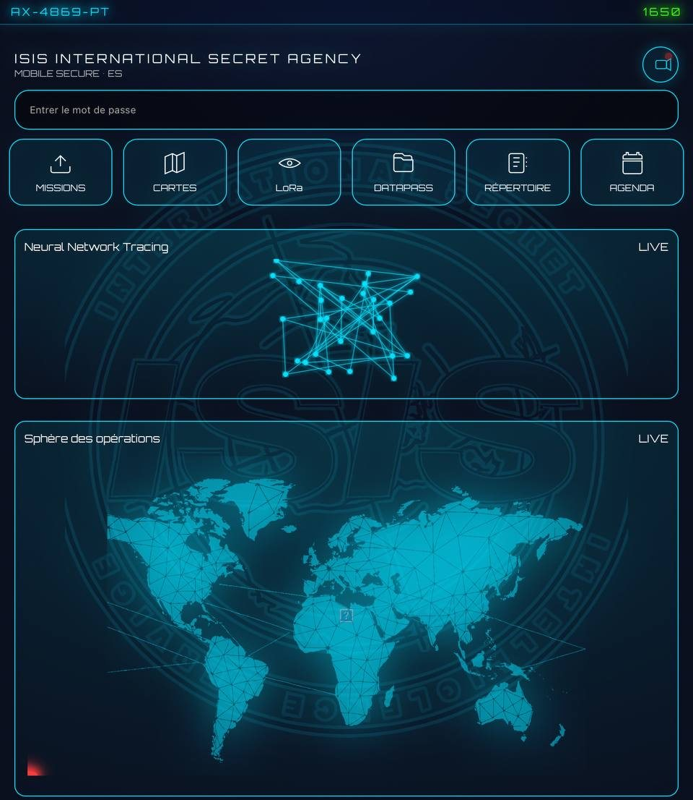
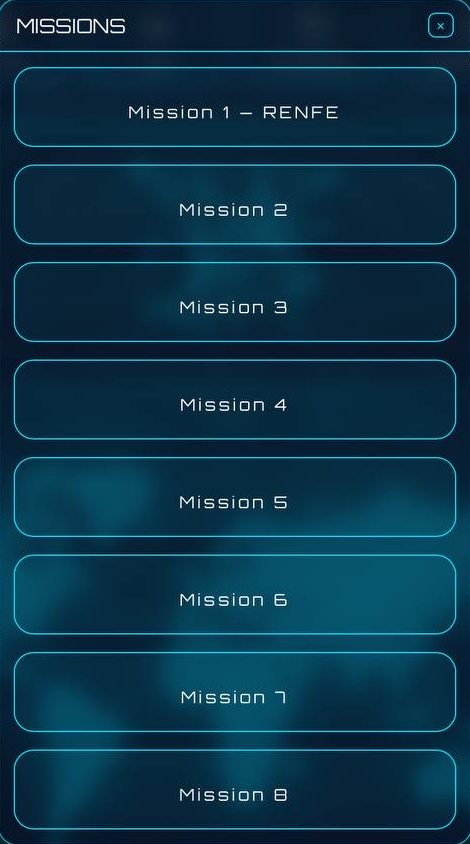
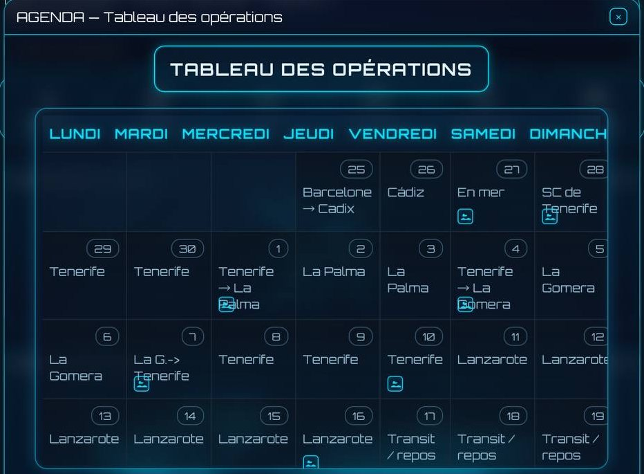
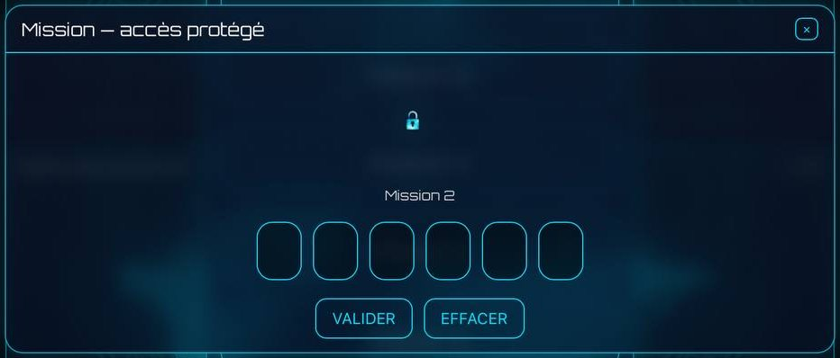
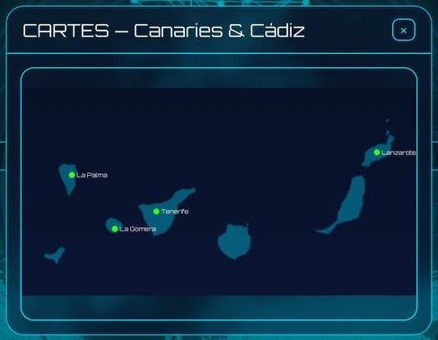

ISIS
Expérience d’enquête immersive et transmédia
Une enquête qui mêle objets physiques, documents, indices, manipulation et interface numérique. ISIS, l’agence fictive développée pour l’expérience, accompagne les joueurs tout au long de leur mission : accès sécurisés, cartes, dossiers, agenda opérationnel et contenus débloqués progressivement.
Expérience physique
Mallette, documents, indices et éléments manipulables.
Expérience numérique
Une véritable interface développée pour accompagner le jeu : missions, accès protégés, cartes, Datapass et tableau des opérations.

L’interface de l’agence
Prototype numérique fonctionnel développé pour accompagner l’expérience. Captures réelles.
-

Interface principale
-

Choix des missions
-

Tableau des opérations
-

Accès sécurisé
-

Cartes et données terrain